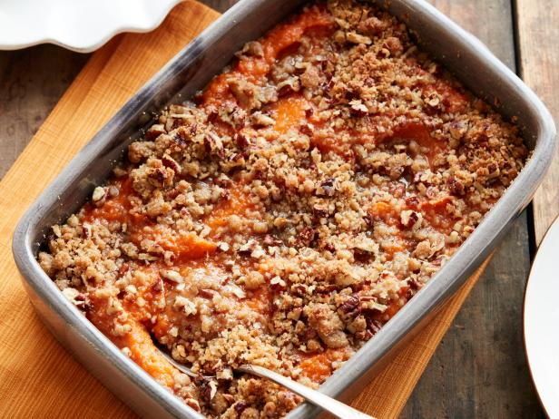

Sweet Potato Casserole

- Yield: 6-8 servings
- Time: 45 min
Ingredients
Filling
- 1/2 stick butter, melted
- 3-4 peeled large sweet potatoes
- 1/2 cup milk
- 1/4 cup brown sugar
- 1 tsp vanilla extract
- 1/2 tsp kosher salt
- 2 large eggs
Topping
- 1/2 cup flour
- 1/2 cup brown sugar
- 1/2 stick butter
- 1/4 tsp salt
- 3/4 cup chopped pecans
Directions
-
Add 1 3/4 pounds peeled and cubed sweet potatoes
to a large pot of salted water. Bring to a boil over
high heat, then lower to heat to simmer and cook until
potatoes are very tender, 15 to 20 minutes. Drain and cool.
Mash the sweet potatoes.
-
For the filling: Preheat the oven to 350 degrees.
Butter a 2-quart baking dish.
-
Whisk together the butter, mashed sweet potatoes,
milk, brown sugar, vanilla, salt and eggs in a large
bowl. Transfer to the prepared baking dish.
-
For the topping: Combine the flour, brown sugar, Butter
and salt in a medium bowl until moise and the mixture
clumps together. Stir in the pecans. Spread the mixture
over the top of the sweet potatoes in an even layer.
Bake until mostly set in the center and golden on top,
25 to 30 mintues. Serve hot.